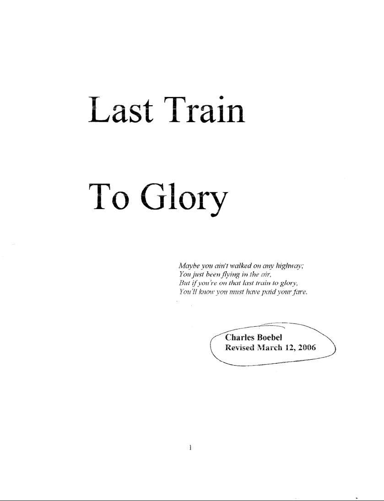
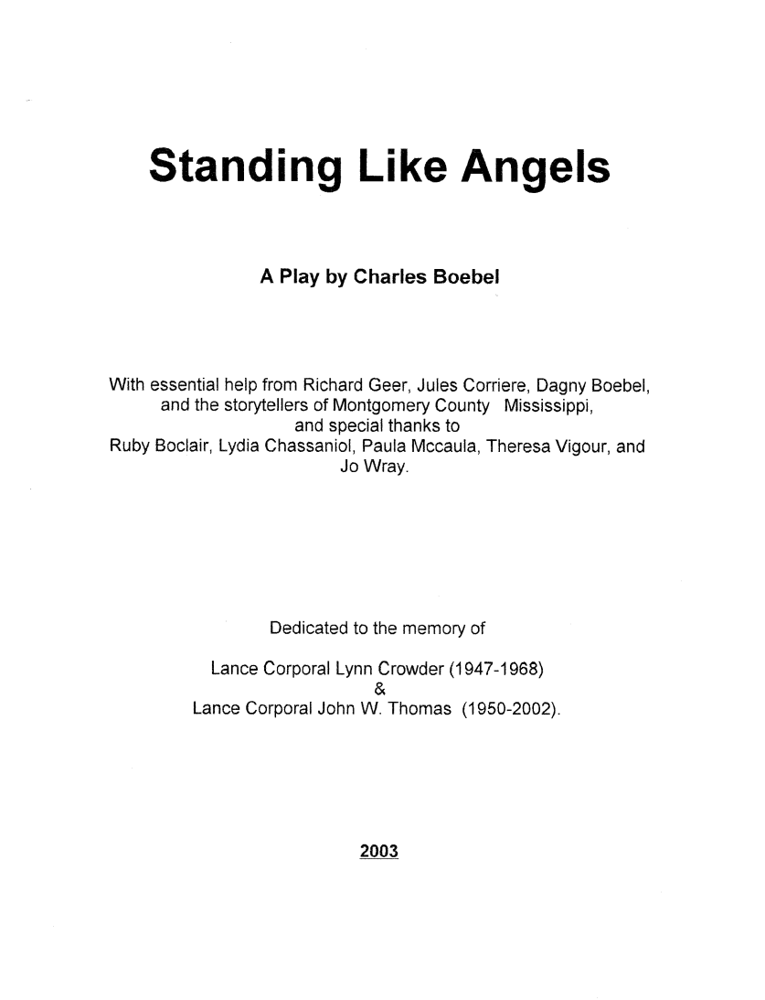

A DIGITAL ARCHIVE
The Works of
Charles Boebel
A collection preserving the plays and theatrical works of Charles Boebel.
Explore the PlaysTHE COLLECTION
Plays & Scripts
Explore the available works in the Charles Boebel archive.


ABOUT
Charles Edward Boebel Jr.
Charles Edward Boebel Jr. was born in Boscobel, Wisconsin, on September 13, 1938. He married Dagny Hexom of Decorah, Iowa, at the First Lutheran Church in Decorah, on December 29, 1960, together they raised four children: Christopher, Anne, Nicholas, and Mary.
Boebel's education started in Boscobel where he would graduate in 1956. He would then attend Luther College and graduate in 1960. Boebel would obtain his master's degree in English literature from the University of Iowa, and his Ph.D. from the University of Arizona in 1971. During the beginning of his career, he taught at the University of Arizona, Cal Poly San Luis Obispo, Luther College, and at Manchester University for twenty-six years. After retirement, he continued to teach at Manchester University and other colleges in Indiana part-time.
Later on he would teach English composition and literature, with a focus mainly on 19th and 20th century British literature, as well as journalism for many years. Afterwords, he wrote features and columns for a wide variety of newspapers, along academic articles and reviews. Eventually becoming a published poet and playwright, whose plays were commissioned by Manchester University, the town of North Manchester, and the Mongomery County Arts Council of Winona, Mississippi.
At Manchester University, Boebel served on numerous committees and at different times chaired both the English Department and the Humanities Division. He received a numerous of grants and awards and did research in England in 1967-68 after receiving a Danforth Teacher Grant.
Boebel's major hobbies and things he loved to do consisted of camping, canoeing, swimming, and travel, while of course staying devoted to his family. He loved nothing more than traveling with family members or visiting them around United States and in foreign countries, including Israel, Bahrain, and Saudi Arabia. He also enjoyed traveling to Europe, like Russia, for academic study.
After retirement, he became a licensed pilot. Following the death of his parents, he and his sister Jan managed Black Oak Century Farm in Boscobel, Wisconsin. In memory of their parents, Charles and Edna Boebel, he and Jan established a scholarship for graduates of Boscobel High School.
Boebel was also a member of Trinity Episcopal Church in Fort Wayne and a longtime supporter of Luther College and Manchester University.